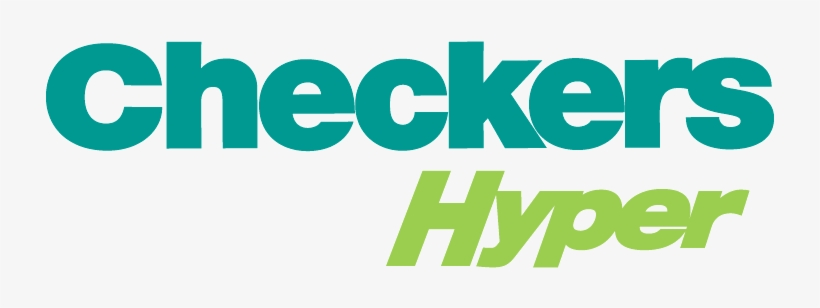

CHECKERS HYPER
Checkers is a FMCG retailer owned by Shoprite that operates in Southern Africa. Checkers currently has 37 Checkers Hypers and 202 Checkers supermarkets operating in Botswana, South Africa and Namibia. The supermarket chain focuses more strongly on fresh produce and offers a wider range of choice food items to a more affluent clientele (LSM 8-10). Norman Herber, the chair of Greatermans department stores, was the founder of Checkers. The firm was later expanded and made successful by Raymond Ackerman. The Checkers supermarket chain is part of the Shoprite Group.
You will find the best products here with a reasonable price.
WHERE WILL YOU FIND THE STORE?
You will find Chekers Hyper at the food court.